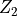

Examples¶
If you are unfamiliar with Python or are not sure whether Python and the needed Python modules are installed on your system, see our python introduction and installation instructions.
You can download each example script below indvidually by clicking on the ‘Source code’ link under each example. Alternatively, you can download all example files as a single tar file
to untar this file use the following unix command:
tar -zxf pythtb-examples.tar.gz
Note that there is also a useful collection of PythTB sample programs that were developed in connection with David Vanderbilt’s book Berry Phases in Electronic Structure Theory (Cambridge University Press, 2018).
Simple example¶
After installing PythTB you can run the following simple example either as:
python simple.py
or by making script executable:
chmod u+x simple.py
and then executing it with:
./simple.py
After you have executed the script, in that same folder file band.pdf should appear and it should look similar to the figure below.
#!/usr/bin/env python
# one dimensional chain
# Copyright under GNU General Public License 2010, 2012, 2016
# by Sinisa Coh and David Vanderbilt (see gpl-pythtb.txt)
from pythtb import * # import TB model class
import matplotlib.pyplot as plt
# specify model
lat=[[1.0]]
orb=[[0.0]]
my_model=tb_model(1,1,lat,orb)
my_model.set_hop(-1., 0, 0, [1])
# define a path in k-space
(k_vec,k_dist,k_node)=my_model.k_path('full',100)
k_label=[r"$0$",r"$\pi$", r"$2\pi$"]
# solve model
evals=my_model.solve_all(k_vec)
# plot band structure
fig, ax = plt.subplots()
ax.plot(k_dist,evals[0])
ax.set_title("1D chain band structure")
ax.set_xlabel("Path in k-space")
ax.set_ylabel("Band energy")
ax.set_xticks(k_node)
ax.set_xticklabels(k_label)
ax.set_xlim(k_node[0],k_node[-1])
for n in range(len(k_node)):
ax.axvline(x=k_node[n], linewidth=0.5, color='k')
fig.tight_layout()
fig.savefig("simple_band.pdf")
(Source code, png, pdf)
{kind=link}
Checkerboard model¶
Simple two-dimensional model.
#!/usr/bin/env python
# two dimensional tight-binding checkerboard model
# Copyright under GNU General Public License 2010, 2012, 2016
# by Sinisa Coh and David Vanderbilt (see gpl-pythtb.txt)
from __future__ import print_function
from pythtb import * # import TB model class
import numpy as np
import matplotlib.pyplot as plt
# define lattice vectors
lat=[[1.0,0.0],[0.0,1.0]]
# define coordinates of orbitals
orb=[[0.0,0.0],[0.5,0.5]]
# make two dimensional tight-binding checkerboard model
my_model=tb_model(2,2,lat,orb)
# set model parameters
delta=1.1
t=0.6
# set on-site energies
my_model.set_onsite([-delta,delta])
# set hoppings (one for each connected pair of orbitals)
# (amplitude, i, j, [lattice vector to cell containing j])
my_model.set_hop(t, 1, 0, [0, 0])
my_model.set_hop(t, 1, 0, [1, 0])
my_model.set_hop(t, 1, 0, [0, 1])
my_model.set_hop(t, 1, 0, [1, 1])
# print tight-binding model
my_model.display()
# generate k-point path and labels
path=[[0.0,0.0],[0.0,0.5],[0.5,0.5],[0.0,0.0]]
label=(r'$\Gamma $',r'$X$', r'$M$', r'$\Gamma $')
(k_vec,k_dist,k_node)=my_model.k_path(path,301)
print('---------------------------------------')
print('starting calculation')
print('---------------------------------------')
print('Calculating bands...')
# solve for eigenenergies of hamiltonian on
# the set of k-points from above
evals=my_model.solve_all(k_vec)
# plotting of band structure
print('Plotting bandstructure...')
# First make a figure object
fig, ax = plt.subplots()
# specify horizontal axis details
ax.set_xlim(k_node[0],k_node[-1])
ax.set_xticks(k_node)
ax.set_xticklabels(label)
for n in range(len(k_node)):
ax.axvline(x=k_node[n], linewidth=0.5, color='k')
# plot bands
for n in range(2):
ax.plot(k_dist,evals[n])
# put title
ax.set_title("Checkerboard band structure")
ax.set_xlabel("Path in k-space")
ax.set_ylabel("Band energy")
# make an PDF figure of a plot
fig.tight_layout()
fig.savefig("checkerboard_band.pdf")
print('Done.\n')
(Source code, png, pdf)
{kind=link}
Trestle¶
Simple model with one-dimensional k-space, two-dimensional r-space, and with complex hoppings.
#!/usr/bin/env python
# one dimensional tight-binding model of a trestle-like structure
# Copyright under GNU General Public License 2010, 2012, 2016
# by Sinisa Coh and David Vanderbilt (see gpl-pythtb.txt)
from __future__ import print_function
from pythtb import * # import TB model class
import numpy as np
import matplotlib.pyplot as plt
# define lattice vectors
lat=[[2.0,0.0],[0.0,1.0]]
# define coordinates of orbitals
orb=[[0.0,0.0],[0.5,1.0]]
# make one dimensional tight-binding model of a trestle-like structure
my_model=tb_model(1,2,lat,orb,per=[0])
# set model parameters
t_first=0.8+0.6j
t_second=2.0
# leave on-site energies to default zero values
# set hoppings (one for each connected pair of orbitals)
# (amplitude, i, j, [lattice vector to cell containing j])
my_model.set_hop(t_second, 0, 0, [1,0])
my_model.set_hop(t_second, 1, 1, [1,0])
my_model.set_hop(t_first, 0, 1, [0,0])
my_model.set_hop(t_first, 1, 0, [1,0])
# print tight-binding model
my_model.display()
# generate list of k-points following some high-symmetry line in
(k_vec,k_dist,k_node)=my_model.k_path('fullc',100)
k_label=[r"$-\pi$",r"$0$", r"$\pi$"]
print('---------------------------------------')
print('starting calculation')
print('---------------------------------------')
print('Calculating bands...')
# solve for eigenenergies of hamiltonian on
# the set of k-points from above
evals=my_model.solve_all(k_vec)
# plotting of band structure
print('Plotting bandstructure...')
# First make a figure object
fig, ax = plt.subplots()
# specify horizontal axis details
ax.set_xlim(k_node[0],k_node[-1])
ax.set_xticks(k_node)
ax.set_xticklabels(k_label)
ax.axvline(x=k_node[1],linewidth=0.5, color='k')
# plot first band
ax.plot(k_dist,evals[0])
# plot second band
ax.plot(k_dist,evals[1])
# put title
ax.set_title("Trestle band structure")
ax.set_xlabel("Path in k-space")
ax.set_ylabel("Band energy")
# make an PDF figure of a plot
fig.tight_layout()
fig.savefig("trestle_band.pdf")
print('Done.\n')
(Source code, png, pdf)
{kind=link}
Molecule¶
This is a zero-dimensional example of a molecule.
#!/usr/bin/env python
# zero dimensional tight-binding model of a NH3 molecule
# Copyright under GNU General Public License 2010, 2012, 2016
# by Sinisa Coh and David Vanderbilt (see gpl-pythtb.txt)
from __future__ import print_function
from pythtb import * # import TB model class
import numpy as np
import matplotlib.pyplot as plt
# define lattice vectors
lat=[[1.0,0.0,0.0],[0.0,1.0,0.0],[0.0,0.0,1.0]]
# define coordinates of orbitals
sq32=np.sqrt(3.0)/2.0
orb=[[ (2./3.)*sq32, 0. ,0.],
[(-1./3.)*sq32, 1./2.,0.],
[(-1./3.)*sq32,-1./2.,0.],
[ 0. , 0. ,1.]]
# make zero dimensional tight-binding model
my_model=tb_model(0,3,lat,orb)
# set model parameters
delta=0.5
t_first=1.0
# change on-site energies so that N and H don't have the same energy
my_model.set_onsite([-delta,-delta,-delta,delta])
# set hoppings (one for each connected pair of orbitals)
# (amplitude, i, j)
my_model.set_hop(t_first, 0, 1)
my_model.set_hop(t_first, 0, 2)
my_model.set_hop(t_first, 0, 3)
my_model.set_hop(t_first, 1, 2)
my_model.set_hop(t_first, 1, 3)
my_model.set_hop(t_first, 2, 3)
# print tight-binding model
my_model.display()
print('---------------------------------------')
print('starting calculation')
print('---------------------------------------')
print('Calculating bands...')
print()
print('Band energies')
print()
# solve for eigenenergies of hamiltonian
evals=my_model.solve_all()
# First make a figure object
fig, ax = plt.subplots()
# plot all states
ax.plot(evals,"bo")
ax.set_xlim(-0.3,3.3)
ax.set_ylim(evals.min()-0.5,evals.max()+0.5)
# put title
ax.set_title("Molecule levels")
ax.set_xlabel("Orbital")
ax.set_ylabel("Energy")
# make an PDF figure of a plot
fig.tight_layout()
fig.savefig("0dim_spectrum.pdf")
print('Done.\n')
(Source code, png, pdf)
{kind=link}
Graphene model¶
This is a toy model of a two-dimensional graphene sheet.
#!/usr/bin/env python
# Toy graphene model
# Copyright under GNU General Public License 2010, 2012, 2016
# by Sinisa Coh and David Vanderbilt (see gpl-pythtb.txt)
from __future__ import print_function
from pythtb import * # import TB model class
import numpy as np
import matplotlib.pyplot as plt
# define lattice vectors
lat=[[1.0,0.0],[0.5,np.sqrt(3.0)/2.0]]
# define coordinates of orbitals
orb=[[1./3.,1./3.],[2./3.,2./3.]]
# make two dimensional tight-binding graphene model
my_model=tb_model(2,2,lat,orb)
# set model parameters
delta=0.0
t=-1.0
# set on-site energies
my_model.set_onsite([-delta,delta])
# set hoppings (one for each connected pair of orbitals)
# (amplitude, i, j, [lattice vector to cell containing j])
my_model.set_hop(t, 0, 1, [ 0, 0])
my_model.set_hop(t, 1, 0, [ 1, 0])
my_model.set_hop(t, 1, 0, [ 0, 1])
# print tight-binding model
my_model.display()
# generate list of k-points following a segmented path in the BZ
# list of nodes (high-symmetry points) that will be connected
path=[[0.,0.],[2./3.,1./3.],[.5,.5],[0.,0.]]
# labels of the nodes
label=(r'$\Gamma $',r'$K$', r'$M$', r'$\Gamma $')
# total number of interpolated k-points along the path
nk=121
# call function k_path to construct the actual path
(k_vec,k_dist,k_node)=my_model.k_path(path,nk)
# inputs:
# path, nk: see above
# my_model: the pythtb model
# outputs:
# k_vec: list of interpolated k-points
# k_dist: horizontal axis position of each k-point in the list
# k_node: horizontal axis position of each original node
print('---------------------------------------')
print('starting calculation')
print('---------------------------------------')
print('Calculating bands...')
# obtain eigenvalues to be plotted
evals=my_model.solve_all(k_vec)
# figure for bandstructure
fig, ax = plt.subplots()
# specify horizontal axis details
# set range of horizontal axis
ax.set_xlim(k_node[0],k_node[-1])
# put tickmarks and labels at node positions
ax.set_xticks(k_node)
ax.set_xticklabels(label)
# add vertical lines at node positions
for n in range(len(k_node)):
ax.axvline(x=k_node[n],linewidth=0.5, color='k')
# put title
ax.set_title("Graphene band structure")
ax.set_xlabel("Path in k-space")
ax.set_ylabel("Band energy")
# plot first and second band
ax.plot(k_dist,evals[0])
ax.plot(k_dist,evals[1])
# make an PDF figure of a plot
fig.tight_layout()
fig.savefig("graphene.pdf")
print('Done.\n')
(Source code, png, pdf)
{kind=link}
Berry phase around Dirac cone in graphene¶
This example computes Berry phases for a circular path (in reduced coordinates) around the Dirac point of the graphene band structure. In order to have a well defined sign of the Berry phase, a small on-site staggered potential is added in order to open a gap at the Dirac point.
After computing the Berry phase around the circular loop, it also computes the integral of the Berry curvature over a small square patch in the Brillouin zone containing the Dirac point, and plots individual phases for each plaquette in the array.
#!/usr/bin/env python
# Compute Berry phase around Dirac cone in
# graphene with staggered onsite term delta
# Copyright under GNU General Public License 2010, 2012, 2016
# by Sinisa Coh and David Vanderbilt (see gpl-pythtb.txt)
from __future__ import print_function
from pythtb import * # import TB model class
import numpy as np
import matplotlib.pyplot as plt
# define lattice vectors
lat=[[1.0,0.0],[0.5,np.sqrt(3.0)/2.0]]
# define coordinates of orbitals
orb=[[1./3.,1./3.],[2./3.,2./3.]]
# make two dimensional tight-binding graphene model
my_model=tb_model(2,2,lat,orb)
# set model parameters
delta=-0.1 # small staggered onsite term
t=-1.0
# set on-site energies
my_model.set_onsite([-delta,delta])
# set hoppings (one for each connected pair of orbitals)
# (amplitude, i, j, [lattice vector to cell containing j])
my_model.set_hop(t, 0, 1, [ 0, 0])
my_model.set_hop(t, 1, 0, [ 1, 0])
my_model.set_hop(t, 1, 0, [ 0, 1])
# print tight-binding model
my_model.display()
# construct circular path around Dirac cone
# parameters of the path
circ_step=31
circ_center=np.array([1.0/3.0,2.0/3.0])
circ_radius=0.05
# one-dimensional wf_array to store wavefunctions on the path
w_circ=wf_array(my_model,[circ_step])
# now populate array with wavefunctions
for i in range(circ_step):
# construct k-point coordinate on the path
ang=2.0*np.pi*float(i)/float(circ_step-1)
kpt=np.array([np.cos(ang)*circ_radius,np.sin(ang)*circ_radius])
kpt+=circ_center
# find and store eigenvectors for this k-point
w_circ.solve_on_one_point(kpt,i)
# make sure that first and last points are the same
w_circ[-1]=w_circ[0]
# compute Berry phase along circular path
print("Berry phase along circle with radius: ",circ_radius)
print(" centered at k-point: ",circ_center)
print(" for band 0 equals : ", w_circ.berry_phase([0],0))
print(" for band 1 equals : ", w_circ.berry_phase([1],0))
print(" for both bands equals: ", w_circ.berry_phase([0,1],0))
print()
# construct two-dimensional square patch covering the Dirac cone
# parameters of the patch
square_step=31
square_center=np.array([1.0/3.0,2.0/3.0])
square_length=0.1
# two-dimensional wf_array to store wavefunctions on the path
w_square=wf_array(my_model,[square_step,square_step])
all_kpt=np.zeros((square_step,square_step,2))
# now populate array with wavefunctions
for i in range(square_step):
for j in range(square_step):
# construct k-point on the square patch
kpt=np.array([square_length*(-0.5+float(i)/float(square_step-1)),
square_length*(-0.5+float(j)/float(square_step-1))])
kpt+=square_center
# store k-points for plotting
all_kpt[i,j,:]=kpt
# find eigenvectors at this k-point
(eval,evec)=my_model.solve_one(kpt,eig_vectors=True)
# store eigenvector into wf_array object
w_square[i,j]=evec
# compute Berry flux on this square patch
print("Berry flux on square patch with length: ",square_length)
print(" centered at k-point: ",square_center)
print(" for band 0 equals : ", w_square.berry_flux([0]))
print(" for band 1 equals : ", w_square.berry_flux([1]))
print(" for both bands equals: ", w_square.berry_flux([0,1]))
print()
# also plot Berry phase on each small plaquette of the mesh
plaq=w_square.berry_flux([0],individual_phases=True)
#
fig, ax = plt.subplots()
ax.imshow(plaq.T,origin="lower",
extent=(all_kpt[0,0,0],all_kpt[-2, 0,0],
all_kpt[0,0,1],all_kpt[ 0,-2,1],))
ax.set_title("Berry curvature near Dirac cone")
ax.set_xlabel(r"$k_x$")
ax.set_ylabel(r"$k_y$")
fig.tight_layout()
fig.savefig("cone_phases.pdf")
print('Done.\n')
(Source code, png, pdf)
{kind=link}
One-dimensional cycle of 1D tight-binding model¶
This example considers a simple three-site one-dimensional tight-binding
model parametrized by some parameter  . As
is changed from 0 to 1, the deepest onsite term is moved from the first
to second, then to the third, and then back to the first tight-binding
orbital. Therefore, we expect that Wannier center of the lowest band will
shift by one lattice vector as changes from 0 to 1.
. As
is changed from 0 to 1, the deepest onsite term is moved from the first
to second, then to the third, and then back to the first tight-binding
orbital. Therefore, we expect that Wannier center of the lowest band will
shift by one lattice vector as changes from 0 to 1.
Also plots the individual on-site energies, band structure, and Wannier center of lowest band.
#!/usr/bin/env python
# one-dimensional family of tight binding models
# parametrized by one parameter, lambda
# Copyright under GNU General Public License 2010, 2012, 2016
# by Sinisa Coh and David Vanderbilt (see gpl-pythtb.txt)
from __future__ import print_function
from pythtb import * # import TB model class
import numpy as np
import matplotlib.pyplot as plt
# define lattice vectors
lat=[[1.0]]
# define coordinates of orbitals
orb=[[0.0],[1.0/3.0],[2.0/3.0]]
# make one dimensional tight-binding model
my_model=tb_model(1,1,lat,orb)
# set model parameters
delta=2.0
t=-1.0
# set hoppings (one for each connected pair of orbitals)
# (amplitude, i, j, [lattice vector to cell containing j])
my_model.set_hop(t, 0, 1, [0])
my_model.set_hop(t, 1, 2, [0])
my_model.set_hop(t, 2, 0, [1])
# plot onsite terms for each site
fig_onsite, ax_onsite = plt.subplots()
# plot band structure for each lambda
fig_band, ax_band = plt.subplots()
# evolve tight-binding parameter along some path by
# performing a change of onsite terms
# how many steps to take along the path (including end points)
path_steps=21
# create lambda mesh from 0.0 to 1.0 (21 values and 20 intervals)
all_lambda=np.linspace(0.0,1.0,path_steps,endpoint=True)
# how many k-points to use (31 values and 30 intervals)
num_kpt=31
# two-dimensional wf_array in which we will store wavefunctions
# for all k-points and all values of lambda. (note that the index
# order [k,lambda] is important for interpreting the sign.)
wf_kpt_lambda=wf_array(my_model,[num_kpt,path_steps])
for i_lambda in range(path_steps):
# for each step along the path compute onsite terms for each orbital
lmbd=all_lambda[i_lambda]
onsite_0=delta*(-1.0)*np.cos(2.0*np.pi*(lmbd-0.0/3.0))
onsite_1=delta*(-1.0)*np.cos(2.0*np.pi*(lmbd-1.0/3.0))
onsite_2=delta*(-1.0)*np.cos(2.0*np.pi*(lmbd-2.0/3.0))
# update onsite terms by rewriting previous values
my_model.set_onsite([onsite_0,onsite_1,onsite_2],mode="reset")
# create k mesh over 1D Brillouin zone
(k_vec,k_dist,k_node)=my_model.k_path([[-0.5],[0.5]],num_kpt,report=False)
# solve model on all of these k-points
(eval,evec)=my_model.solve_all(k_vec,eig_vectors=True)
# store wavefunctions (eigenvectors)
for i_kpt in range(num_kpt):
wf_kpt_lambda[i_kpt,i_lambda]=evec[:,i_kpt,:]
# plot on-site terms
ax_onsite.scatter([lmbd],[onsite_0],c="r")
ax_onsite.scatter([lmbd],[onsite_1],c="g")
ax_onsite.scatter([lmbd],[onsite_2],c="b")
# plot band structure for all three bands
for band in range(eval.shape[0]):
ax_band.plot(k_dist,eval[band,:],"k-",linewidth=0.5)
# impose periodic boundary condition along k-space direction only
# (so that |psi_nk> at k=0 and k=1 have the same phase)
wf_kpt_lambda.impose_pbc(0,0)
# compute Berry phase along k-direction for each lambda
phase=wf_kpt_lambda.berry_phase([0],0)
# plot position of Wannier function for bottom band
fig_wann, ax_wann = plt.subplots()
# wannier center in reduced coordinates
wann_center=phase/(2.0*np.pi)
# plot wannier centers
ax_wann.plot(all_lambda,wann_center,"ko-")
# compute integrated curvature
final=wf_kpt_lambda.berry_flux([0])
print("Berry flux in k-lambda space: ",final)
# finish plot of onsite terms
ax_onsite.set_title("Onsite energy for all three orbitals")
ax_onsite.set_xlabel("Lambda parameter")
ax_onsite.set_ylabel("Onsite terms")
ax_onsite.set_xlim(0.0,1.0)
fig_onsite.tight_layout()
fig_onsite.savefig("3site_onsite.pdf")
# finish plot for band structure
ax_band.set_title("Band structure")
ax_band.set_xlabel("Path in k-vector")
ax_band.set_ylabel("Band energies")
ax_band.set_xlim(0.0,1.0)
fig_band.tight_layout()
fig_band.savefig("3site_band.pdf")
# finish plot for Wannier center
ax_wann.set_title("Center of Wannier function")
ax_wann.set_xlabel("Lambda parameter")
ax_wann.set_ylabel("Center (reduced coordinate)")
ax_wann.set_xlim(0.0,1.0)
fig_wann.tight_layout()
fig_wann.savefig("3site_wann.pdf")
print('Done.\n')
{kind=link}
{kind=link}
{kind=link}
One-dimensional cycle on a finite 1D chain¶
This example is based on the same model as the one above but it considers the effect of the one-dimensional cycle on the edge states of a finite chain.
#!/usr/bin/env python
# one-dimensional family of tight binding models
# parametrized by one parameter, lambda
# Copyright under GNU General Public License 2010, 2012, 2016
# by Sinisa Coh and David Vanderbilt (see gpl-pythtb.txt)
from __future__ import print_function
from pythtb import * # import TB model class
import numpy as np
import matplotlib.pyplot as plt
# define function to construct model
def set_model(t,delta,lmbd):
lat=[[1.0]]
orb=[[0.0],[1.0/3.0],[2.0/3.0]]
model=tb_model(1,1,lat,orb)
model.set_hop(t, 0, 1, [0])
model.set_hop(t, 1, 2, [0])
model.set_hop(t, 2, 0, [1])
onsite_0=delta*(-1.0)*np.cos(2.0*np.pi*(lmbd-0.0/3.0))
onsite_1=delta*(-1.0)*np.cos(2.0*np.pi*(lmbd-1.0/3.0))
onsite_2=delta*(-1.0)*np.cos(2.0*np.pi*(lmbd-2.0/3.0))
model.set_onsite([onsite_0,onsite_1,onsite_2])
return(model)
# set model parameters
delta=2.0
t=-1.3
# evolve tight-binding parameter lambda along a path
path_steps=21
all_lambda=np.linspace(0.0,1.0,path_steps,endpoint=True)
# get model at arbitrary lambda for initializations
my_model=set_model(t,delta,0.)
# set up 1d Brillouin zone mesh
num_kpt=31
(k_vec,k_dist,k_node)=my_model.k_path([[-0.5],[0.5]],num_kpt,report=False)
# two-dimensional wf_array in which we will store wavefunctions
# we store it in the order [lambda,k] since want Berry curvatures
# and Chern numbers defined with the [lambda,k] sign convention
wf_kpt_lambda=wf_array(my_model,[path_steps,num_kpt])
# fill the array with eigensolutions
for i_lambda in range(path_steps):
lmbd=all_lambda[i_lambda]
my_model=set_model(t,delta,lmbd)
(eval,evec)=my_model.solve_all(k_vec,eig_vectors=True)
for i_kpt in range(num_kpt):
wf_kpt_lambda[i_lambda,i_kpt]=evec[:,i_kpt,:]
# compute integrated curvature
print("Chern numbers for rising fillings")
print(" Band 0 = %5.2f" % (wf_kpt_lambda.berry_flux([0])/(2.*np.pi)))
print(" Bands 0,1 = %5.2f" % (wf_kpt_lambda.berry_flux([0,1])/(2.*np.pi)))
print(" Bands 0,1,2 = %5.2f" % (wf_kpt_lambda.berry_flux([0,1,2])/(2.*np.pi)))
print("")
print("Chern numbers for individual bands")
print(" Band 0 = %5.2f" % (wf_kpt_lambda.berry_flux([0])/(2.*np.pi)))
print(" Band 1 = %5.2f" % (wf_kpt_lambda.berry_flux([1])/(2.*np.pi)))
print(" Band 2 = %5.2f" % (wf_kpt_lambda.berry_flux([2])/(2.*np.pi)))
print("")
# for annotating plot with text
text_lower="C of band [0] = %3.0f" % (wf_kpt_lambda.berry_flux([0])/(2.*np.pi))
text_upper="C of bands [0,1] = %3.0f" % (wf_kpt_lambda.berry_flux([0,1])/(2.*np.pi))
# now loop over parameter again, this time for finite chains
path_steps=241
all_lambda=np.linspace(0.0,1.0,path_steps,endpoint=True)
# length of chain, in unit cells
num_cells=10
num_orb=3*num_cells
# initialize array for chain eigenvalues and x expectations
ch_eval=np.zeros([num_orb,path_steps],dtype=float)
ch_xexp=np.zeros([num_orb,path_steps],dtype=float)
for i_lambda in range(path_steps):
lmbd=all_lambda[i_lambda]
# construct and solve model
my_model=set_model(t,delta,lmbd)
ch_model=my_model.cut_piece(num_cells,0)
(eval,evec)=ch_model.solve_all(eig_vectors=True)
# save eigenvalues
ch_eval[:,i_lambda]=eval
ch_xexp[:,i_lambda]=ch_model.position_expectation(evec,0)
# plot eigenvalues vs. lambda
# symbol size is reduced for states localized near left end
(fig, ax) = plt.subplots()
# loop over "bands"
for n in range(num_orb):
# diminish the size of the ones on the borderline
xcut=2. # discard points below this
xfull=4. # use sybols of full size above this
size=(ch_xexp[n,:]-xcut)/(xfull-xcut)
for i in range(path_steps):
size[i]=min(size[i],1.)
size[i]=max(size[i],0.1)
ax.scatter(all_lambda[:],ch_eval[n,:], edgecolors='none', s=size*6., c='k')
# annotate gaps with bulk Chern numbers calculated earlier
ax.text(0.20,-1.7,text_lower)
ax.text(0.45, 1.5,text_upper)
ax.set_title("Eigenenergies for finite chain of 3-site-model")
ax.set_xlabel(r"Parameter $\lambda$")
ax.set_ylabel("Energy")
ax.set_xlim(0.,1.)
fig.tight_layout()
fig.savefig("3site_endstates.pdf")
print('Done.\n')
(Source code, png, pdf)
{kind=link}
Haldane model¶
Haldane model is a graphene model with complex second neighbour hoppings.
Here we have calculated the density of states as well.
#!/usr/bin/env python
# Haldane model from Phys. Rev. Lett. 61, 2015 (1988)
# Copyright under GNU General Public License 2010, 2012, 2016
# by Sinisa Coh and David Vanderbilt (see gpl-pythtb.txt)
from __future__ import print_function
from pythtb import * # import TB model class
import numpy as np
import matplotlib.pyplot as plt
# define lattice vectors
lat=[[1.0,0.0],[0.5,np.sqrt(3.0)/2.0]]
# define coordinates of orbitals
orb=[[1./3.,1./3.],[2./3.,2./3.]]
# make two dimensional tight-binding Haldane model
my_model=tb_model(2,2,lat,orb)
# set model parameters
delta=0.2
t=-1.0
t2 =0.15*np.exp((1.j)*np.pi/2.)
t2c=t2.conjugate()
# set on-site energies
my_model.set_onsite([-delta,delta])
# set hoppings (one for each connected pair of orbitals)
# (amplitude, i, j, [lattice vector to cell containing j])
my_model.set_hop(t, 0, 1, [ 0, 0])
my_model.set_hop(t, 1, 0, [ 1, 0])
my_model.set_hop(t, 1, 0, [ 0, 1])
# add second neighbour complex hoppings
my_model.set_hop(t2 , 0, 0, [ 1, 0])
my_model.set_hop(t2 , 1, 1, [ 1,-1])
my_model.set_hop(t2 , 1, 1, [ 0, 1])
my_model.set_hop(t2c, 1, 1, [ 1, 0])
my_model.set_hop(t2c, 0, 0, [ 1,-1])
my_model.set_hop(t2c, 0, 0, [ 0, 1])
# print tight-binding model
my_model.display()
# generate list of k-points following a segmented path in the BZ
# list of nodes (high-symmetry points) that will be connected
path=[[0.,0.],[2./3.,1./3.],[.5,.5],[1./3.,2./3.], [0.,0.]]
# labels of the nodes
label=(r'$\Gamma $',r'$K$', r'$M$', r'$K^\prime$', r'$\Gamma $')
# call function k_path to construct the actual path
(k_vec,k_dist,k_node)=my_model.k_path(path,101)
# inputs:
# path: see above
# 101: number of interpolated k-points to be plotted
# outputs:
# k_vec: list of interpolated k-points
# k_dist: horizontal axis position of each k-point in the list
# k_node: horizontal axis position of each original node
# obtain eigenvalues to be plotted
evals=my_model.solve_all(k_vec)
# figure for bandstructure
fig, ax = plt.subplots()
# specify horizontal axis details
# set range of horizontal axis
ax.set_xlim(k_node[0],k_node[-1])
# put tickmarks and labels at node positions
ax.set_xticks(k_node)
ax.set_xticklabels(label)
# add vertical lines at node positions
for n in range(len(k_node)):
ax.axvline(x=k_node[n],linewidth=0.5, color='k')
# put title
ax.set_title("Haldane model band structure")
ax.set_xlabel("Path in k-space")
ax.set_ylabel("Band energy")
# plot first band
ax.plot(k_dist,evals[0])
# plot second band
ax.plot(k_dist,evals[1])
# make an PDF figure of a plot
fig.tight_layout()
fig.savefig("haldane_band.pdf")
print()
print('---------------------------------------')
print('starting DOS calculation')
print('---------------------------------------')
print('Calculating DOS...')
# calculate density of states
# first solve the model on a mesh and return all energies
kmesh=20
kpts=[]
for i in range(kmesh):
for j in range(kmesh):
kpts.append([float(i)/float(kmesh),float(j)/float(kmesh)])
# solve the model on this mesh
evals=my_model.solve_all(kpts)
# flatten completely the matrix
evals=evals.flatten()
# plotting DOS
print('Plotting DOS...')
# now plot density of states
fig, ax = plt.subplots()
ax.hist(evals,50,range=(-4.,4.))
ax.set_ylim(0.0,80.0)
# put title
ax.set_title("Haldane model density of states")
ax.set_xlabel("Band energy")
ax.set_ylabel("Number of states")
# make an PDF figure of a plot
fig.tight_layout()
fig.savefig("haldane_dos.pdf")
print('Done.\n')
{kind=link}
{kind=link}
Finite Haldane model¶
Now let us calculate the density of states for a finite piece of the Haldane model with and without periodic boundary conditions (PBC).
#!/usr/bin/env python
# Haldane model from Phys. Rev. Lett. 61, 2015 (1988)
# Calculates density of states for finite sample of Haldane model
# Copyright under GNU General Public License 2010, 2012, 2016
# by Sinisa Coh and David Vanderbilt (see gpl-pythtb.txt)
from __future__ import print_function
from pythtb import * # import TB model class
import numpy as np
import matplotlib.pyplot as plt
# define lattice vectors
lat=[[1.0,0.0],[0.5,np.sqrt(3.0)/2.0]]
# define coordinates of orbitals
orb=[[1./3.,1./3.],[2./3.,2./3.]]
# make two dimensional tight-binding Haldane model
my_model=tb_model(2,2,lat,orb)
# set model parameters
delta=0.0
t=-1.0
t2 =0.15*np.exp((1.j)*np.pi/2.)
t2c=t2.conjugate()
# set on-site energies
my_model.set_onsite([-delta,delta])
# set hoppings (one for each connected pair of orbitals)
# (amplitude, i, j, [lattice vector to cell containing j])
my_model.set_hop(t, 0, 1, [ 0, 0])
my_model.set_hop(t, 1, 0, [ 1, 0])
my_model.set_hop(t, 1, 0, [ 0, 1])
# add second neighbour complex hoppings
my_model.set_hop(t2 , 0, 0, [ 1, 0])
my_model.set_hop(t2 , 1, 1, [ 1,-1])
my_model.set_hop(t2 , 1, 1, [ 0, 1])
my_model.set_hop(t2c, 1, 1, [ 1, 0])
my_model.set_hop(t2c, 0, 0, [ 1,-1])
my_model.set_hop(t2c, 0, 0, [ 0, 1])
# print tight-binding model details
my_model.display()
# cutout finite model first along direction x with no PBC
tmp_model=my_model.cut_piece(20,0,glue_edgs=False)
# cutout also along y direction
fin_model_false=tmp_model.cut_piece(20,1,glue_edgs=False)
# cutout finite model first along direction x with PBC
tmp_model=my_model.cut_piece(20,0,glue_edgs=True)
# cutout also along y direction
fin_model_true=tmp_model.cut_piece(20,1,glue_edgs=True)
# solve finite model
evals_false=fin_model_false.solve_all()
evals_false=evals_false.flatten()
evals_true=fin_model_true.solve_all()
evals_true=evals_true.flatten()
# now plot density of states
fig, ax = plt.subplots()
ax.hist(evals_false,50,range=(-4.,4.))
ax.set_ylim(0.0,80.0)
ax.set_title("Finite Haldane model without PBC")
ax.set_xlabel("Band energy")
ax.set_ylabel("Number of states")
fig.tight_layout()
fig.savefig("haldane_fin_dos_false.pdf")
fig, ax = plt.subplots()
ax.hist(evals_true,50,range=(-4.,4.))
ax.set_ylim(0.0,80.0)
ax.set_title("Finite Haldane model with PBC")
ax.set_xlabel("Band energy")
ax.set_ylabel("Number of states")
fig.tight_layout()
fig.savefig("haldane_fin_dos_true.pdf")
print('Done.\n')
{kind=link}
{kind=link}
Edge states¶
Plots the edge state-eigenfunction for a finite Haldane model that is periodic either in both directions or in only one direction.
#!/usr/bin/env python
# Haldane model from Phys. Rev. Lett. 61, 2015 (1988)
# Solves model and draws one of its edge states.
# Copyright under GNU General Public License 2010, 2012, 2016
# by Sinisa Coh and David Vanderbilt (see gpl-pythtb.txt)
from __future__ import print_function
from pythtb import * # import TB model class
import numpy as np
# define lattice vectors
lat=[[1.0,0.0],[0.5,np.sqrt(3.0)/2.0]]
# define coordinates of orbitals
orb=[[1./3.,1./3.],[2./3.,2./3.]]
# make two dimensional tight-binding Haldane model
my_model=tb_model(2,2,lat,orb)
# set model parameters
delta=0.0
t=-1.0
t2 =0.15*np.exp((1.j)*np.pi/2.)
t2c=t2.conjugate()
# set on-site energies
my_model.set_onsite([-delta,delta])
# set hoppings (one for each connected pair of orbitals)
# (amplitude, i, j, [lattice vector to cell containing j])
my_model.set_hop(t, 0, 1, [ 0, 0])
my_model.set_hop(t, 1, 0, [ 1, 0])
my_model.set_hop(t, 1, 0, [ 0, 1])
# add second neighbour complex hoppings
my_model.set_hop(t2 , 0, 0, [ 1, 0])
my_model.set_hop(t2 , 1, 1, [ 1,-1])
my_model.set_hop(t2 , 1, 1, [ 0, 1])
my_model.set_hop(t2c, 1, 1, [ 1, 0])
my_model.set_hop(t2c, 0, 0, [ 1,-1])
my_model.set_hop(t2c, 0, 0, [ 0, 1])
# print tight-binding model details
my_model.display()
# cutout finite model first along direction x with no PBC
tmp_model=my_model.cut_piece(10,0,glue_edgs=False)
# cutout also along y direction with no PBC
fin_model=tmp_model.cut_piece(10,1,glue_edgs=False)
# cutout finite model first along direction x with PBC
tmp_model_half=my_model.cut_piece(10,0,glue_edgs=True)
# cutout also along y direction with no PBC
fin_model_half=tmp_model_half.cut_piece(10,1,glue_edgs=False)
# solve finite models
(evals,evecs)=fin_model.solve_all(eig_vectors=True)
(evals_half,evecs_half)=fin_model_half.solve_all(eig_vectors=True)
# pick index of state in the middle of the gap
ed=fin_model.get_num_orbitals()//2
# draw one of the edge states in both cases
(fig,ax)=fin_model.visualize(0,1,eig_dr=evecs[ed,:],draw_hoppings=False)
ax.set_title("Edge state for finite model without periodic direction")
ax.set_xlabel("x coordinate")
ax.set_ylabel("y coordinate")
fig.tight_layout()
fig.savefig("edge_state.pdf")
#
(fig,ax)=fin_model_half.visualize(0,1,eig_dr=evecs_half[ed,:],draw_hoppings=False)
ax.set_title("Edge state for finite model periodic in one direction")
ax.set_xlabel("x coordinate")
ax.set_ylabel("y coordinate")
fig.tight_layout()
fig.savefig("edge_state_half.pdf")
print('Done.\n')
{kind=link}
{kind=link}
Berry phases in Haldane model¶
Calculate Berry phases along (which are proportional
to the 1D Wannier center positions along  ) as a function
of for the Haldane model. This is done first for each
band separately, then for both together. Two different approaches,
one less and one more automated, are illustrated. The results
indicate that the two bands have equal and opposite Chern
numbers. Finally, the Berry curvature is calculated and printed.
) as a function
of for the Haldane model. This is done first for each
band separately, then for both together. Two different approaches,
one less and one more automated, are illustrated. The results
indicate that the two bands have equal and opposite Chern
numbers. Finally, the Berry curvature is calculated and printed.
#!/usr/bin/env python
# Haldane model from Phys. Rev. Lett. 61, 2015 (1988)
# Calculates Berry phases and curvatures for this model
# Copyright under GNU General Public License 2010, 2012, 2016
# by Sinisa Coh and David Vanderbilt (see gpl-pythtb.txt)
from __future__ import print_function
from pythtb import * # import TB model class
import numpy as np
import matplotlib.pyplot as plt
# define lattice vectors
lat=[[1.0,0.0],[0.5,np.sqrt(3.0)/2.0]]
# define coordinates of orbitals
orb=[[1./3.,1./3.],[2./3.,2./3.]]
# make two dimensional tight-binding Haldane model
my_model=tb_model(2,2,lat,orb)
# set model parameters
delta=0.0
t=-1.0
t2 =0.15*np.exp((1.j)*np.pi/2.)
t2c=t2.conjugate()
# set on-site energies
my_model.set_onsite([-delta,delta])
# set hoppings (one for each connected pair of orbitals)
# (amplitude, i, j, [lattice vector to cell containing j])
my_model.set_hop(t, 0, 1, [ 0, 0])
my_model.set_hop(t, 1, 0, [ 1, 0])
my_model.set_hop(t, 1, 0, [ 0, 1])
# add second neighbour complex hoppings
my_model.set_hop(t2 , 0, 0, [ 1, 0])
my_model.set_hop(t2 , 1, 1, [ 1,-1])
my_model.set_hop(t2 , 1, 1, [ 0, 1])
my_model.set_hop(t2c, 1, 1, [ 1, 0])
my_model.set_hop(t2c, 0, 0, [ 1,-1])
my_model.set_hop(t2c, 0, 0, [ 0, 1])
# print tight-binding model details
my_model.display()
print(r"Using approach #1")
# approach #1
# generate object of type wf_array that will be used for
# Berry phase and curvature calculations
my_array_1=wf_array(my_model,[31,31])
# solve model on a regular grid, and put origin of
# Brillouin zone at -1/2 -1/2 point
my_array_1.solve_on_grid([-0.5,-0.5])
# calculate Berry phases around the BZ in the k_x direction
# (which can be interpreted as the 1D hybrid Wannier center
# in the x direction) and plot results as a function of k_y
#
# Berry phases along k_x for lower band
phi_a_1 = my_array_1.berry_phase([0],0,contin=True)
# Berry phases along k_x for upper band
phi_b_1 = my_array_1.berry_phase([1],0,contin=True)
# Berry phases along k_x for both bands
phi_c_1 = my_array_1.berry_phase([0,1],0,contin=True)
# Berry flux for lower band
flux_a_1=my_array_1.berry_flux([0])
# plot Berry phases
fig, ax = plt.subplots()
ky=np.linspace(0.,1.,len(phi_a_1))
ax.plot(ky,phi_a_1, 'ro')
ax.plot(ky,phi_b_1, 'go')
ax.plot(ky,phi_c_1, 'bo')
ax.set_title("Berry phase for lower (red), top (green), both bands (blue)")
ax.set_xlabel(r"$k_y$")
ax.set_ylabel(r"Berry phase along $k_x$")
ax.set_xlim(0.,1.)
ax.set_ylim(-7.,7.)
ax.yaxis.set_ticks([-2.*np.pi,-np.pi,0.,np.pi,2.*np.pi])
ax.set_yticklabels((r'$-2\pi$',r'$-\pi$',r'$0$',r'$\pi$', r'$2\pi$'))
fig.tight_layout()
fig.savefig("haldane_bp_phase.pdf")
# print out info about flux
print(" Berry flux= ",flux_a_1)
print(r"Using approach #2")
# approach #2
# do the same thing as in approach #1 but do not use
# automated solver
#
# intialize k-space mesh
nkx=31
nky=31
kx=np.linspace(-0.5,0.5,num=nkx)
ky=np.linspace(-0.5,0.5,num=nky)
# initialize object to store all wavefunctions
my_array_2=wf_array(my_model,[nkx,nky])
# solve model at all k-points
for i in range(nkx):
for j in range(nky):
(eval,evec)=my_model.solve_one([kx[i],ky[j]],eig_vectors=True)
# store wavefunctions
my_array_2[i,j]=evec
# impose periodic boundary conditions in both k_x and k_y directions
my_array_2.impose_pbc(0,0)
my_array_2.impose_pbc(1,1)
# calculate Berry flux for lower band
flux_a_2=my_array_2.berry_flux([0])
# print out info about curvature
print(" Berry flux= ",flux_a_2)
print('Done.\n')
(Source code, png, pdf)
{kind=link}
Hybrid Wannier centers in Haldane model¶
Calculates Berry phases for the Haldane model and compares it to the hybrid Wannier centers for a ribbon of the Haldane model.
#!/usr/bin/env python
# Haldane model from Phys. Rev. Lett. 61, 2015 (1988)
# First, compute bulk Wannier centers along direction 1
# Then, cut a ribbon that extends along direcion 0, and compute
# both the edge states and the finite hybrid Wannier centers
# along direction 1.
# Copyright under GNU General Public License 2010, 2012, 2016
# by Sinisa Coh and David Vanderbilt (see gpl-pythtb.txt)
from __future__ import print_function
from pythtb import * # import TB model class
import numpy as np
import matplotlib.pyplot as plt
# set model parameters
delta=-0.2
t=-1.0
t2 =0.05-0.15j
t2c=t2.conjugate()
# Fermi level, relevant for edge states of ribbon
efermi=0.25
# define lattice vectors and orbitals and make model
lat=[[1.0,0.0],[0.5,np.sqrt(3.0)/2.0]]
orb=[[1./3.,1./3.],[2./3.,2./3.]]
my_model=tb_model(2,2,lat,orb)
# set on-site energies and hoppings
my_model.set_onsite([-delta,delta])
my_model.set_hop(t, 0, 1, [ 0, 0])
my_model.set_hop(t, 1, 0, [ 1, 0])
my_model.set_hop(t, 1, 0, [ 0, 1])
my_model.set_hop(t2 , 0, 0, [ 1, 0])
my_model.set_hop(t2 , 1, 1, [ 1,-1])
my_model.set_hop(t2 , 1, 1, [ 0, 1])
my_model.set_hop(t2c, 1, 1, [ 1, 0])
my_model.set_hop(t2c, 0, 0, [ 1,-1])
my_model.set_hop(t2c, 0, 0, [ 0, 1])
# number of discretized sites or k-points in the mesh in directions 0 and 1
len_0=100
len_1=10
# compute Berry phases in direction 1 for the bottom band
my_array=wf_array(my_model,[len_0,len_1])
my_array.solve_on_grid([0.0,0.0])
phi_1=my_array.berry_phase(occ=[0], dir=1, contin=True)
# create Haldane ribbon that is finite along direction 1
ribbon_model=my_model.cut_piece(len_1, fin_dir=1, glue_edgs=False)
(k_vec,k_dist,k_node)=ribbon_model.k_path([0.0, 0.5, 1.0],len_0,report=False)
k_label=[r"$0$",r"$\pi$", r"$2\pi$"]
# solve ribbon model to get eigenvalues and eigenvectors
(rib_eval,rib_evec)=ribbon_model.solve_all(k_vec,eig_vectors=True)
# shift bands so that the fermi level is at zero energy
rib_eval-=efermi
# find k-points at which number of states below the Fermi level changes
jump_k=[]
for i in range(rib_eval.shape[1]-1):
nocc_i =np.sum(rib_eval[:,i]<0.0)
nocc_ip=np.sum(rib_eval[:,i+1]<0.0)
if nocc_i!=nocc_ip:
jump_k.append(i)
# plot expectation value of position operator for states in the ribbon
# and hybrid Wannier function centers
fig, (ax1, ax2) = plt.subplots(2,1,figsize=(3.7,4.5))
# plot bandstructure of the ribbon
for n in range(rib_eval.shape[0]):
ax1.plot(k_dist,rib_eval[n,:],c='k', zorder=-50)
# color bands according to expectation value of y operator (red=top, blue=bottom)
for i in range(rib_evec.shape[1]):
# get expectation value of the position operator for states at i-th kpoint
pos_exp=ribbon_model.position_expectation(rib_evec[:,i],dir=1)
# plot states according to the expectation value
s=ax1.scatter([k_vec[i]]*rib_eval.shape[0], rib_eval[:,i], c=pos_exp, s=7,
marker='o', cmap="coolwarm", edgecolors='none', vmin=0.0, vmax=float(len_1), zorder=-100)
# color scale
fig.colorbar(s,None,ax1,ticks=[0.0,float(len_1)])
# plot Fermi energy
ax1.axhline(0.0,c='m',zorder=-200)
# vertical lines show crossings of surface bands with Fermi energy
for ax in [ax1,ax2]:
for i in jump_k:
ax.axvline(x=(k_vec[i]+k_vec[i+1])/2.0, linewidth=0.7, color='k',zorder=-150)
# tweaks
ax1.set_ylabel("Ribbon band energy")
ax1.set_ylim(-2.3,2.3)
# bottom plot shows Wannier center flow
# bulk Wannier centers in green lines
# finite-ribbon Wannier centers in black dots
# compare with Fig 3 in Phys. Rev. Lett. 102, 107603 (2009)
# plot bulk hybrid Wannier center positions and their periodic images
for j in range(-1,len_1+1):
ax2.plot(k_vec,float(j)+phi_1/(2.0*np.pi),'k-',zorder=-50)
# plot finite centers of ribbon along direction 1
for i in range(rib_evec.shape[1]):
# get occupied states only (those below Fermi level)
occ_evec=rib_evec[rib_eval[:,i]<0.0,i]
# get centers of hybrid wannier functions
hwfc=ribbon_model.position_hwf(occ_evec,1)
print(hwfc.shape)
# plot centers
s=ax2.scatter([k_vec[i]]*hwfc.shape[0], hwfc, c=hwfc, s=7,
marker='o', cmap="coolwarm", edgecolors='none', vmin=0.0, vmax=float(len_1), zorder=-100)
# color scale
fig.colorbar(s,None,ax2,ticks=[0.0,float(len_1)])
# tweaks
ax2.set_xlabel(r"k vector along direction 0")
ax2.set_ylabel(r"Wannier center along direction 1")
ax2.set_ylim(-0.5,len_1+0.5)
# label both axes
for ax in [ax1,ax2]:
ax.set_xlim(k_node[0],k_node[-1])
ax.set_xticks(k_node)
ax.set_xticklabels(k_label)
fig.tight_layout()
fig.savefig("haldane_hwf.pdf")
print('Done.\n')
(Source code, png, pdf)
{kind=link}
Kane-Mele model using spinor features¶
Calculate the band structure of the Kane-Mele model, illustrating
the use of spinor features of the code. Also compute the 1D
Wannier centers along as a function of ,
illustrating the determination of the  invariant.
#!/usr/bin/env python
# Two dimensional tight-binding 2D Kane-Mele model
# C.L. Kane and E.J. Mele, PRL 95, 146802 (2005) Eq. (1)
# Copyright under GNU General Public License 2010, 2012, 2016
# by Sinisa Coh and David Vanderbilt (see gpl-pytb.txt)
from __future__ import print_function
from pythtb import * # import TB model class
import numpy as np
import matplotlib.pyplot as plt
def get_kane_mele(topological):
"Return a Kane-Mele model in the normal or topological phase."
# define lattice vectors
lat=[[1.0,0.0],[0.5,np.sqrt(3.0)/2.0]]
# define coordinates of orbitals
orb=[[1./3.,1./3.],[2./3.,2./3.]]
# make two dimensional tight-binding Kane-Mele model
ret_model=tb_model(2,2,lat,orb,nspin=2)
# set model parameters depending on whether you are in the topological
# phase or not
if topological=="even":
esite=2.5
elif topological=="odd":
esite=1.0
# set other parameters of the model
thop=1.0
spin_orb=0.6*thop*0.5
rashba=0.25*thop
# set on-site energies
ret_model.set_onsite([esite,(-1.0)*esite])
# set hoppings (one for each connected pair of orbitals)
# (amplitude, i, j, [lattice vector to cell containing j])
# useful definitions
sigma_x=np.array([0.,1.,0.,0])
sigma_y=np.array([0.,0.,1.,0])
sigma_z=np.array([0.,0.,0.,1])
# spin-independent first-neighbor hoppings
ret_model.set_hop(thop, 0, 1, [ 0, 0])
ret_model.set_hop(thop, 0, 1, [ 0,-1])
ret_model.set_hop(thop, 0, 1, [-1, 0])
# second-neighbour spin-orbit hoppings (s_z)
ret_model.set_hop(-1.j*spin_orb*sigma_z, 0, 0, [ 0, 1])
ret_model.set_hop( 1.j*spin_orb*sigma_z, 0, 0, [ 1, 0])
ret_model.set_hop(-1.j*spin_orb*sigma_z, 0, 0, [ 1,-1])
ret_model.set_hop( 1.j*spin_orb*sigma_z, 1, 1, [ 0, 1])
ret_model.set_hop(-1.j*spin_orb*sigma_z, 1, 1, [ 1, 0])
ret_model.set_hop( 1.j*spin_orb*sigma_z, 1, 1, [ 1,-1])
# Rashba first-neighbor hoppings: (s_x)(dy)-(s_y)(d_x)
r3h =np.sqrt(3.0)/2.0
# bond unit vectors are (r3h,half) then (0,-1) then (-r3h,half)
ret_model.set_hop(1.j*rashba*( 0.5*sigma_x-r3h*sigma_y), 0, 1, [ 0, 0], mode="add")
ret_model.set_hop(1.j*rashba*(-1.0*sigma_x ), 0, 1, [ 0,-1], mode="add")
ret_model.set_hop(1.j*rashba*( 0.5*sigma_x+r3h*sigma_y), 0, 1, [-1, 0], mode="add")
return ret_model
# now solve the model and find Wannier centers for both topological
# and normal phase of the model
for top_index in ["even","odd"]:
# get the tight-binding model
my_model=get_kane_mele(top_index)
# list of nodes (high-symmetry points) that will be connected
path=[[0.,0.],[2./3.,1./3.],[.5,.5],[1./3.,2./3.], [0.,0.]]
# labels of the nodes
label=(r'$\Gamma $',r'$K$', r'$M$', r'$K^\prime$', r'$\Gamma $')
(k_vec,k_dist,k_node)=my_model.k_path(path,101,report=False)
# initialize figure with subplots
fig, (ax1, ax2) = plt.subplots(1,2,figsize=(6.5,2.8))
# solve for eigenenergies of hamiltonian on
# the set of k-points from above
evals=my_model.solve_all(k_vec)
# plot bands
ax1.plot(k_dist,evals[0])
ax1.plot(k_dist,evals[1])
ax1.plot(k_dist,evals[2])
ax1.plot(k_dist,evals[3])
ax1.set_title("Kane-Mele: "+top_index+" phase")
ax1.set_xticks(k_node)
ax1.set_xticklabels(label)
ax1.set_xlim(k_node[0],k_node[-1])
for n in range(len(k_node)):
ax1.axvline(x=k_node[n],linewidth=0.5, color='k')
ax1.set_xlabel("k-space")
ax1.set_ylabel("Energy")
#calculate my-array
my_array=wf_array(my_model,[41,41])
# solve model on a regular grid, and put origin of
# Brillouin zone at [-1/2,-1/2] point
my_array.solve_on_grid([-0.5,-0.5])
# calculate Berry phases around the BZ in the k_x direction
# (which can be interpreted as the 1D hybrid Wannier centers
# in the x direction) and plot results as a function of k_y
#
# Following the ideas in
# A.A. Soluyanov and D. Vanderbilt, PRB 83, 235401 (2011)
# R. Yu, X.L. Qi, A. Bernevig, Z. Fang and X. Dai, PRB 84, 075119 (2011)
# the connectivity of these curves determines the Z2 index
#
wan_cent = my_array.berry_phase([0,1],dir=1,contin=False,berry_evals=True)
wan_cent/=(2.0*np.pi)
nky=wan_cent.shape[0]
ky=np.linspace(0.,1.,nky)
# draw shifted Wannier center positions
for shift in range(-2,3):
ax2.plot(ky,wan_cent[:,0]+float(shift),"k.")
ax2.plot(ky,wan_cent[:,1]+float(shift),"k.")
ax2.set_ylim(-1.0,1.0)
ax2.set_ylabel('Wannier center along x')
ax2.set_xlabel(r'$k_y$')
ax2.set_xticks([0.0,0.5,1.0])
ax2.set_xlim(0.0,1.0)
ax2.set_xticklabels([r"$0$",r"$\pi$", r"$2\pi$"])
ax2.axvline(x=.5,linewidth=0.5, color='k')
ax2.set_title("1D Wannier centers: "+top_index+" phase")
fig.tight_layout()
fig.savefig("kane_mele_"+top_index+".pdf")
print('Done.\n')
{kind=link}
{kind=link}
Visualization example¶
Demonstrates visualization capabilities of the code.
#!/usr/bin/env python
# Visualization example
# Copyright under GNU General Public License 2010, 2012, 2016
# by Sinisa Coh and David Vanderbilt (see gpl-pythtb.txt)
from __future__ import print_function
from pythtb import * # import TB model class
import numpy as np
# define lattice vectors
lat=[[1.0,0.0],[0.5,np.sqrt(3.0)/2.0]]
# define coordinates of orbitals
orb=[[1./3.,1./3.],[2./3.,2./3.]]
# make two dimensional tight-binding graphene model
my_model=tb_model(2,2,lat,orb)
# set model parameters
delta=0.0
t=-1.0
# set on-site energies
my_model.set_onsite([-delta,delta])
# set hoppings (one for each connected pair of orbitals)
# (amplitude, i, j, [lattice vector to cell containing j])
my_model.set_hop(t, 0, 1, [ 0, 0])
my_model.set_hop(t, 1, 0, [ 1, 0])
my_model.set_hop(t, 1, 0, [ 0, 1])
# visualize infinite model
(fig,ax)=my_model.visualize(0,1)
ax.set_title("Graphene, bulk")
ax.set_xlabel("x coordinate")
ax.set_ylabel("y coordinate")
fig.tight_layout()
fig.savefig("visualize_bulk.pdf")
# cutout finite model along direction 0
cut_one=my_model.cut_piece(8,0,glue_edgs=False)
#
(fig,ax)=cut_one.visualize(0,1)
ax.set_title("Graphene, ribbon")
ax.set_xlabel("x coordinate")
ax.set_ylabel("y coordinate")
fig.tight_layout()
fig.savefig("visualize_ribbon.pdf")
# cutout finite model along direction 1 as well
cut_two=cut_one.cut_piece(8,1,glue_edgs=False)
#
(fig,ax)=cut_two.visualize(0,1)
ax.set_title("Graphene, finite")
ax.set_xlabel("x coordinate")
ax.set_ylabel("y coordinate")
fig.tight_layout()
fig.savefig("visualize_finite.pdf")
print('Done.\n')
{kind=link}
{kind=link}
{kind=link}
Arbitrary graphene surface¶
Using supercell generator, one can calculate and plot the surface band structure for an arbitrary surface orientation.
#!/usr/bin/env python
# Make arbitrary surface of the graphene model using
# make_supercell method.
# Copyright under GNU General Public License 2010, 2012, 2016
# by Sinisa Coh and David Vanderbilt (see gpl-pythtb.txt)
from __future__ import print_function
from pythtb import * # import TB model class
import numpy as np
import matplotlib.pyplot as plt
# define lattice vectors
lat=[[1.0,0.0],[0.5,np.sqrt(3.0)/2.0]]
# define coordinates of orbitals
orb=[[1./3.,1./3.],[2./3.,2./3.]]
# make two dimensional tight-binding graphene model
my_model=tb_model(2,2,lat,orb)
# set model parameters
delta=0.0
t=-1.0
# set on-site energies
my_model.set_onsite([-delta,delta])
# set hoppings (one for each connected pair of orbitals)
# (amplitude, i, j, [lattice vector to cell containing j])
my_model.set_hop(t, 0, 1, [ 0, 0])
my_model.set_hop(t, 1, 0, [ 1, 0])
my_model.set_hop(t, 1, 0, [ 0, 1])
# make the supercell of the model
sc_model=my_model.make_supercell([[2,1],[-1,2]],to_home=True)
# now make a slab of the supercell
slab_model=sc_model.cut_piece(6,1,glue_edgs=False)
# visualize slab unit cell
(fig,ax)=slab_model.visualize(0,1)
ax.set_title("Graphene, arbitrary surface")
ax.set_xlabel("x coordinate")
ax.set_ylabel("y coordinate")
fig.tight_layout()
fig.savefig("supercell_vis.pdf")
# compute the band structure in the entire band
(k_vec,k_dist,k_node)=slab_model.k_path('full',100)
evals=slab_model.solve_all(k_vec)
# plotting of band structure
print('Plotting bandstructure...')
# First make a figure object
fig, ax = plt.subplots()
# plot all bands
for i in range(evals.shape[0]):
ax.plot(k_dist,evals[i],"k-")
# zoom in close to the zero energy
ax.set_xlim(k_dist[0],k_dist[-1])
ax.set_ylim(-1.0,1.0)
# put title on top
ax.set_title("Graphene arbitrary surface band structure")
ax.set_xlabel("k parallel to edge")
ax.set_ylabel("Band energy")
ax.xaxis.set_ticks(k_node)
ax.set_xticklabels((r'$0$',r'$\pi$',r'$2\pi$'))
# make an PDF figure of a plot
fig.tight_layout()
fig.savefig("supercell_band.pdf")
print('Done.\n')
{kind=link}
{kind=link}
Buckled layer¶
This is a very simple illustration of a slab geometry in which the orbitals are specified in a 3D space, but the system is only extensive in 2D, so that k-space is only 2D.
#!/usr/bin/env python
# buckled layer model on rectangular lattice
# illustrates usage of function k_path
# Copyright under GNU General Public License 2010, 2012, 2016
# by Sinisa Coh and David Vanderbilt (see gpl-pythtb.txt)
from __future__ import print_function
from pythtb import * # import TB model class
import numpy as np
import matplotlib.pyplot as plt
# real space is 3D
# define lattice vectors
lat=[[1.0,0.0,0.0],[0.0,1.25,0.0],[0.0,0.0,3.0]]
# define coordinates of orbitals
orb=[[0.0,0.0,-0.15],[0.5,0.5,0.15]]
# only first two lattice vectors repeat, so k-space is 2D
my_model=tb_model(2,3,lat,orb)
# set model parameters
delta=1.1
t=0.6
# set on-site energies
my_model.set_onsite([-delta,delta])
# set hoppings (one for each connected pair of orbitals)
# (amplitude, i, j, [lattice vector to cell containing j])
my_model.set_hop(t, 1, 0, [0, 0, 0])
my_model.set_hop(t, 1, 0, [1, 0, 0])
my_model.set_hop(t, 1, 0, [0, 1, 0])
my_model.set_hop(t, 1, 0, [1, 1, 0])
# print tight-binding model
my_model.display()
# ----------------------------------------
# specify k-space path
# ----------------------------------------
# specify a path in k-space by listing a set of nodes; the path
# will consist of straight line segments connecting these nodes
path=[[0.0,0.0],[0.0,0.5],[0.5,0.5],[0.0,0.0]]
# specify labels for these nodal points
label=(r'$\Gamma $',r'$X$', r'$M$', r'$\Gamma $')
# call function k_path to construct the actual path
(k_vec,k_dist,k_node)=my_model.k_path(path,81)
# inputs:
# path: see above
# 81: number of interpolated k-points to be plotted
# outputs:
# k_vec: list of interpolated k-points
# k_dist: horizontal axis position of each k-point in the list
# k_node: horizontal axis position of each original node
# ----------------------------------------
# do bandstructure calculation
# ----------------------------------------
print('Calculating bandstructure...')
evals=my_model.solve_all(k_vec)
# ----------------------------------------
# plot band structure
# ----------------------------------------
print('Plotting bandstructure...')
# Initialize plot
fig, ax = plt.subplots()
ax.set_title("Bandstructure for buckled rectangular layer")
ax.set_ylabel("Band energy")
# specify horizontal axis details
ax.set_xlim(k_node[0],k_node[-1])
# put tickmarks and labels at node positions
ax.set_xticks(k_node)
ax.set_xticklabels(label)
# add vertical lines at node positions
for n in range(len(k_node)):
ax.axvline(x=k_node[n],linewidth=0.5, color='k')
# Plot two bands
ax.plot(k_dist,evals[0])
ax.plot(k_dist,evals[1])
# save as PDF
fig.tight_layout()
fig.savefig("buckled_layer.pdf")
print('Done.\n')
(Source code, png, pdf)
{kind=link}
Hybrid Wannier functions on a cubic slab¶
This code illustrates a calculation of the Berry phases along x of individual z-localized hybrid Wannier bands for a slab model (finite in z but extended in x and y), using a wf_array structure to simplify the calculation.
#!/usr/bin/env python
from __future__ import print_function # python3 style print
# Construct and compute Berry phases of hybrid Wannier functions
# for a simple slab model
from pythtb import * # import TB model class
import matplotlib.pyplot as plt
# set up model on bcc motif (CsCl structure)
# nearest-neighbor hopping only, but of two different strengths
def set_model(delta,ta,tb):
lat=[[1.0,0.0,0.0],[0.0,1.0,0.0],[0.0,0.0,1.0]]
orb=[[0.0,0.0,0.0],[0.5,0.5,0.5]]
model=tb_model(3,3,lat,orb)
model.set_onsite([-delta,delta])
for lvec in ([-1,0,0],[0,0,-1],[-1,-1,0],[0,-1,-1]):
model.set_hop(ta, 0, 1, lvec)
for lvec in ([0,0,0],[0,-1,0],[-1,-1,-1],[-1,0,-1]):
model.set_hop(tb, 0, 1, lvec)
# Symmetry is actually orthorhombic with a simple m_y mirror
# and two diagonal mirror planes containing the y axis
return model
# set model parameters and construct bulk model
delta=1.0 # site energy shift
ta=0.4 # six weaker hoppings
tb=0.7 # two stronger hoppings
bulk_model=set_model(delta,ta,tb)
# bulk_model.display()
# make slab model
nl=9 # number of layers
slab_model=bulk_model.cut_piece(nl,2,glue_edgs=False)
# remove top orbital so top and bottom have the same termination
slab_model=slab_model.remove_orb(2*nl-1)
print('\nConstructed %2d-layer slab model\n'%nl)
# slab_model.display()
# solve on grid to check insulating
nk=10
k_1d=np.linspace(0.,1.,nk,endpoint=False)
kpts=[]
for kx in k_1d:
for ky in k_1d:
kpts.append([kx,ky])
evals=slab_model.solve_all(kpts)
# delta > 0, so there are nl valence and nl-1 conduction bands
e_vb=evals[:nl,:]
e_cb=evals[nl+1:,:]
print("VB min,max = %6.3f , %6.3f"%(np.min(e_vb),np.max(e_vb)))
print("CB min,max = %6.3f , %6.3f"%(np.min(e_cb),np.max(e_cb)))
# initialize and fill wf_array object for Bloch functions
nk=9
bloch_arr=wf_array(slab_model,[nk,nk])
bloch_arr.solve_on_grid([0.0, 0.0])
#
# initalize wf_array to hold HWFs, and Numpy array for HWFCs
hwf_arr=bloch_arr.empty_like(nsta_arr=nl)
hwfc=np.zeros([nk,nk,nl])
# loop over k points and fill arrays with HW centers and vectors
for ix in range(nk):
for iy in range(nk):
(val,vec)=bloch_arr.position_hwf([ix,iy],occ=list(range(nl)),
dir=2,hwf_evec=True,basis="orbital")
hwfc[ix,iy]=val
hwf_arr[ix,iy]=vec
# impose periodic boundary conditions
hwf_arr.impose_pbc(0,0)
hwf_arr.impose_pbc(1,1)
# compute and print mean and standard deviation of Wannier centers by layer
print('\nLocations of hybrid Wannier centers along z:\n')
print(' Layer '+nl*' %2d '%tuple(range(nl)))
print(' Mean '+nl*'%8.4f'%tuple(np.mean(hwfc,axis=(0,1))))
print(' Std Dev'+nl*'%8.4f'%tuple(np.std(hwfc,axis=(0,1))))
# compute and print layer contributions to polarization along x, then y
px=np.zeros((nl,nk))
py=np.zeros((nl,nk))
for n in range(nl):
px[n,:]=hwf_arr.berry_phase(dir=0,occ=[n])/(2.*np.pi)
print('\nBerry phases along x (rows correspond to k_y points):\n')
print(' Layer '+nl*' %2d '%tuple(range(nl)))
for k in range(nk):
print(' '+nl*'%8.4f'%tuple(px[:,k]))
# when averaging, don't count last k-point
px_mean=np.mean(px[:,:-1],axis=1)
print('\n Ave '+nl*'%8.4f'%tuple(px_mean))
# Similar calculations along y give zero due to m_y mirror')
nlh=nl//2
sum_top=np.sum(px_mean[:nlh])
sum_bot=np.sum(px_mean[-nlh:])
print('\n Surface sums: Top, Bottom = %8.4f , %8.4f\n'%(sum_top,sum_bot))
# These quantities are essentially the "surface polarizations" of the
# model as defined within the hybrid Wannier gauge. See, e.g.,
# S. Ren, I. Souza, and D. Vanderbilt, "Quadrupole moments, edge
# polarizations, and corner charges in the Wannier representation,"
# Phys. Rev. B 103, 035147 (2021).
# Make bar chart
fig = plt.figure()
plt.bar(range(nl),px_mean)
plt.axhline(0.,linewidth=0.8,color='k')
plt.xticks(range(nl))
plt.xlabel("Layer index of hybrid Wannier band")
plt.ylabel(r"Contribution to $P_x$")
fig.tight_layout()
fig.savefig("cubic_slab_hwf.pdf")
(Source code, png, pdf)
{kind=link}
BN ribbon with change of nonperiodic vector¶
This boron nitride ribbon calculation illustrates a case where it is a good idea to change a nonperiodic lattice vector to be normal to the periodic direction(s). While the model is physically the same before and after the change, as shown by the identical band structures, the Berry phase is consistent with the polarization in the extended direction only after the change.
#!/usr/bin/env python
# Boron nitride ribbon: Compute Berry phase
# Copyright under GNU General Public License 2010, 2012, 2016, 2021
# by Sinisa Coh and David Vanderbilt (see gpl-pythtb.txt)
from __future__ import print_function
from pythtb import * # import TB model class
import numpy as np
import matplotlib.pyplot as plt
# define lattice vectors
lat=[[1.0,0.0],[0.5,np.sqrt(3.0)/2.0]]
# define coordinates of orbitals
orb=[[1./3.,1./3.],[2./3.,2./3.]]
# ------
# make two dimensional tight-binding boron nitride model
my_model=tb_model(2,2,lat,orb)
# set periodic model
delta=0.4
t=-1.0
my_model.set_onsite([-delta,delta])
my_model.set_hop(t, 0, 1, [ 0, 0])
my_model.set_hop(t, 1, 0, [ 1, 0])
my_model.set_hop(t, 1, 0, [ 0, 1])
# cut out 3 unit cells along second direction with open boundary
# conditions to make ribbon model
model_orig=my_model.cut_piece(3,1,glue_edgs=False)
print('\n========================================================')
print('construct and display original model with tilted')
print('nonperiodic lattice vector')
print('========================================================\n')
model_orig.display()
# ------
# reset second lattice vector normal to the first one
# model_perp=model_orig.change_nonperiodic_vector(1,to_home_suppress_warning=True)
print('\n========================================================')
print('construct and display new model with nonperiodic lattice')
print('vector changed to be normal to the periodic direction')
print('========================================================\n')
model_perp=model_orig.change_nonperiodic_vector(1)
model_perp.display()
# ------
# initialize figure with subplots
fig, ax = plt.subplots(1,2,figsize=(6.5,2.8))
# ------------------------------------------------------------------
# function to print model, plot band structure, and compute Berry phase
def run_model(model,panel):
numk=41
(k_vec,k_dist,k_node)=model.k_path([[-0.5],[0.5]],numk,report=False)
(eval,evec)=model.solve_all(k_vec,eig_vectors=True)
#
# plot band structure
ax[panel].set_title("Band structure - "+["original","modified"][panel])
ax[panel].set_xlabel("Reduced wavevector")
ax[panel].set_ylabel("Band energy")
ax[panel].set_xlim(-0.5,0.5)
n_bands=eval.shape[0]
for band in range(n_bands):
ax[panel].plot(k_vec,eval[band,:],"k-",linewidth=0.5)
#
# compute and print Berry phase at half filling
wf=wf_array(model,[numk])
wf.solve_on_grid([0.])
n_occ=n_bands//2
berry_phase=wf.berry_phase(range(n_occ),dir=0)
print(' Berry phase = %10.7f\n'%(berry_phase,))
return()
# ------------------------------------------------------------------
print('\n========================================================')
print('solve both models, showing that the band structures are')
print('the same, but Berry phases are different')
print('========================================================\n')
print('Original model\n')
run_model(model_orig,0)
print('Revised model\n')
run_model(model_perp,1)
# save figure
fig.tight_layout()
fig.savefig("bn_ribbon_berry.pdf")
print('Band structures have been saved to "bn_ribbon_berry.pdf"\n')
# Notes
#
# Let x be along the extended direction and y be normal to it.
#
# This model has an M_x mirror symmetry, so the Berry phase is
# expected to be 0 or pi. We find it to be zero, but only after the
# 'change_nonperiodic_vector' method is used to force the nonperiodic
# "lattice vector" to be perpedicular to the extended direction.
#
# The physical meaning of the Berry phase in the original model
# calculation is rather subtle. It is related to the position of
# the joint Wannier center (i.e., summed over occupied bands) in
# the direction of reciprocal lattice vector 0, which has a
# y component as well as an x component (since it must be normal
# to real space lattice vector 1). The joint Wannier center gets
# displaced along y as the hopping 't' is changed, so the Berry
# phase calculation gets "contaminated" by this displacement.
(Source code, png, pdf)
{kind=link}
Quick Wannier90 example¶
To run the interface with Wannier90, you must first download the
following wannier90 output example and unpack it with the following
command in unix command:
tar -zxf wannier90_example.tar.gz
The example below will read the tight-binding model from the Wannier90 calculation, create a simplified model in which some small hopping terms are ignored, and finally plot the interpolated band structure.
#!/usr/bin/env python
# Copyright under GNU General Public License 2010, 2012, 2016
# by Sinisa Coh and David Vanderbilt (see gpl-pythtb.txt)
from pythtb import * # import TB model class
import matplotlib.pyplot as plt
# read output from Wannier90 that should be in folder named "example_a"
# see instructions above for how to obtain the example output from
# Wannier90 for testing purposes
silicon=w90(r"silicon_w90",r"silicon")
# get tight-binding model without hopping terms above 0.01 eV
my_model=silicon.model(min_hopping_norm=0.01)
# solve model on a path and plot it
path=[[0.5,0.5,0.5],[0.0,0.0, 0.0],[0.5,-0.5,0.0], [0.375,-0.375,0.0], [0.0, 0.0, 0.0]]
# labels of the nodes
k_label=(r'$L$', r'$\Gamma$',r'$X$', r'$K$', r'$\Gamma$')
# call function k_path to construct the actual path
(k_vec,k_dist,k_node)=my_model.k_path(path,101)
#
evals=my_model.solve_all(k_vec)
fig, ax = plt.subplots()
for i in range(evals.shape[0]):
ax.plot(k_dist,evals[i],"k-")
for n in range(len(k_node)):
ax.axvline(x=k_node[n],linewidth=0.5, color='k')
ax.set_xlabel("Path in k-space")
ax.set_ylabel("Band energy (eV)")
ax.set_xlim(k_dist[0],k_dist[-1])
ax.set_xticks(k_node)
ax.set_xticklabels(k_label)
fig.tight_layout()
fig.savefig("silicon_quick.pdf")
Longer Wannier90 example¶
This is a somewhat longer example showing how to use the interface to Wannier90. Unlike the example above, this one includes some diagnostics as well.
To run the interface with Wannier90, first download
wannier90 output example
and unpack it with the following command in unix command:
tar -zxf wannier90_example.tar.gz
Here is the source code of the example.
#!/usr/bin/env python
# Copyright under GNU General Public License 2010, 2012, 2016
# by Sinisa Coh and David Vanderbilt (see gpl-pythtb.txt)
from __future__ import print_function
from pythtb import * # import TB model class
import matplotlib.pyplot as plt
# read output from Wannier90 that should be in folder named "example_a"
# see instructions above for how to obtain the example output from Wannier90
# for testing purposes
silicon=w90(r"silicon_w90",r"silicon")
# hard coded fermi level in eV
fermi_ev=0.62285135E+01
# all pair distances berween the orbitals
print("Shells:\n",silicon.shells())
# plot hopping terms as a function of distance on a log scale
(dist,ham)=silicon.dist_hop()
fig, ax = plt.subplots()
ax.scatter(dist,np.log(np.abs(ham)))
ax.set_xlabel("Distance (A)")
ax.set_ylabel(r"$\log H$ (eV)")
fig.tight_layout()
fig.savefig("silicon_dist_ham.pdf")
# get tb model in which some small terms are ignored
my_model=silicon.model(zero_energy=fermi_ev,min_hopping_norm=0.01,max_distance=None,ignorable_imaginary_part=0.01)
# in the case that all steps up to now take a lot of computer time
# it is advised to save tb model to disk with cPickle module:
# import cPickle
# cPickle.dump(my_model,open("store.pkl","wb"))
# Later one can load in the model from disk in a separate script with
# my_model=cPickle.load(open("store.pkl","rb"))
# solve and plot on the same path as used in wannier90
# small discrepancy in the plot is there because of the terms that
# were ignore in the silicon.model function call above
#
fig, ax = plt.subplots()
(w90_kpt,w90_evals)=silicon.w90_bands_consistency()
for i in range(w90_evals.shape[0]):
ax.plot(list(range(w90_evals.shape[1])),w90_evals[i]-fermi_ev,"k-",zorder=-100)
# now interpolate from the model on the same path in k-space
int_evals=my_model.solve_all(w90_kpt)
for i in range(int_evals.shape[0]):
ax.plot(list(range(int_evals.shape[1])),int_evals[i],"r-",zorder=-50)
ax.set_xlim(0,int_evals.shape[1]-1)
ax.set_xlabel("K-path from Wannier90")
ax.set_ylabel("Band energy (eV)")
fig.tight_layout()
fig.savefig("silicon.pdf")